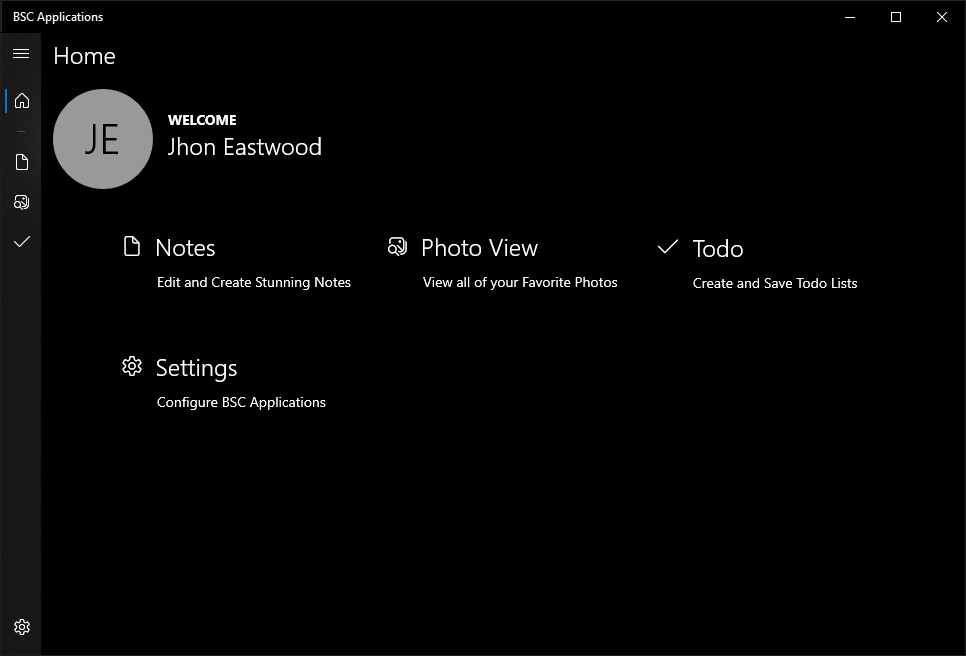

Clean. Native.
And Simple.
BSC Applications

Notes
Quickly jot down information in formatted text. Notes remembers what you typed so when you navigate to another app
you can be reassured that your document is still there. Notes also spell checks every wird
word you type.

Photo View
View, Copy, and take Pictures of your favorite people and events. Say cheese! Photo View allows you to capture photos and paste them any where at the click of two buttons. "Cature" > "Copy" fullstop
Todo
Worry less about remembering things and more about getting things done with Todo. Todo helps organize your life with Todo Lists. Save and Open Todo Lists on the fly.